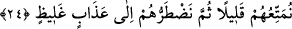

“Zaten bütün işlerin sonu” tevekkül edenin de etmeyenin de işinin sonu, başkasına
değil sadece “Allâh’a varır.” Allah da en güzel şekilde onların karşılığını verir. Her iş
sonunda Allâh’ın dilediği şekilde O’na rücû eder.
23. (Rasûlüm!) İnkâr edenin inkârı seni üzmesin. Onların dönüşü ancak bizedir.
İşte o zaman yaptıklarını kendilerine haber veririz. Allah kalplerde olanı şüphesiz
çok iyi bilir.
“(Rasûlüm!) İnkâr edenin” inanmayıp sağlam kulpa yapışmayanın “inkârı seni
üzmesin.” Çünkü o, dünyâda da âhirette de sana bir zarar veremez. “Onların dönüşü”
başkasına değil “ancak bizedir.” Allâh’a dönüşün mânâsı, O’ndan başka hiçbir
hâkimin ve mâlikin olmadığı yere dönmektir. “İşte o zaman” dünyâda “yaptıklarını”
inkârlarını ve günahlarını azab ve cezâ ile “kendilerine haber veririz. Allah kalplerde
olanı” yâni gönülleri ve onlarda bulunan niyetleri “şüphesiz çok iyi bilir.” Onun içinde
zâhirdeki amellerin karşılığını verdiği gibi onların da karşılığını verir.
24. Onları biraz faydalandırır, sonra kendilerini ağır bir azaba sürükleriz.
“Onları” yâni kâfirleri dünyâ menfaatleriyle “biraz faydalandırırız” ya da az bir
süre yararlandırırız. Hemencecik geçiveren kısa bir zaman için nîmet ve mutluluk gibi
nasipler veririz. İnsanlar dünyâdaki nîmetlerden çok yararlansalar da neticede bu yok
olacaktır. Dolayısıyla devamlı olan âhiret nîmetlerine nispetle, ne kadar çok olsa da bir
gün yok olacak nîmetler elbette azdır. “Sonra kendilerini” âhirette zorla “ağır bir
azaba sürükleriz.” Sonra onları zavallı bir şekilde getiririz. Yâni ister istemez gelirler.
Bu azab onlara, tıpkı son derece ağır cisimleri kaldırmak gibi ağır gelir. Veya yanma
azabına sıkıştırma, baskı ve tazyik azâbı ilâve ederiz. “__WORD__, kişiyi kendine zarar
verecek şeye zorla sevk etmektir. Örfte ise kişiye istemediği bir işi zorla yaptırmaktır.
et-Te’vîlâtü’n-Necmiyye’de şöyle denilir: “Azabın ağır olması, onun sonsuza kadar
devam etmesinden ibarettir.”
“__WORD__ (kalın, kaba, ağır)” kelimesi, “__WORD__ (ince, zayıf, hafif)”in zıddıdır. Esasen
cisimler hakkında kullanılır. Fakat istiâre yoluyla mânâları ifâde için de kullanılır. el-
Müfredât’ta böyle geçer.